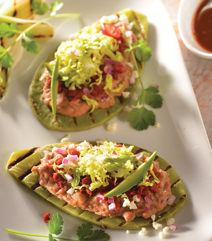

Welcome to Blog
Recetas de Comida | Recetario de Cocina Facil
2021.07.06 18:06Inicio Descarga Recetas Desayunos Comidas Ensaladas Pasta Carnes y Aves Pescados y Mariscos Guarniciones Cenas Postres Bebidas Te recomendamos Saludable Recetas Pollo Pays de Queso Menús Caseros Recetas con huevo Gelatinas Tips de cocina Salud y Nutrición Recetarios Inicio Inicio Descarga Recetas Desayunos Comidas Ensaladas Pasta Carnes y Aves Pescados y Mariscos Guarniciones Cenas Postres Bebidas Te recomendamos Saludable Recetas Pollo Pays de Queso Menús Caseros Recetas con huevo Gelatinas Tips de cocina Salud y Nutrición Recetarios Inicio
Las Recetas de Comida y Cocina Fáciles, de toda la vida.
Desayunos Comidas Cenas Postres Bebidas SnacksTe recomendamos:
Saludable Recetas Pollo Menus Caseros Pays Queso Recetas Huevo Gelatinas
Califica esta página!
Enviar voto
Promedio 5 / 5. Votos: 566
Desayunos
DesayunoCómo hacer una tortilla francesa perfecta para desayunar
escrito por Josselin Melara¿Se te antojó una tortilla francesa para tu desayuno? Te damos los mejores tips para prepararla y una receta muy sencilla.
Continúa leyendo abril 7, 2021 0 Comenta 7 Facebook Twitter Google + Pinterest DesayunoCómo preparar huevos motuleños para un desayuno perfecto
escrito por Cocina FácilPrepara un desayuno muy mexicano y sorprende a todos con esta receta de huevos motuleños tradicionales. ¡no te la puedes perder!
Continúa leyendo marzo 26, 2021 0 Comenta 8 Facebook Twitter Google + Pinterest Comida Mexicana | DesayunoCómo hacer huevo a la mexicana para el desayuno o la merienda
escrito por Josselin MelaraSal de apuro y aprende cómo hacer huevo a la mexicana para desayunar o merendar en familia. ¡Apostamos a que te va a quedar delicioso!
Continúa leyendo marzo 22, 2021 0 Comenta 2 Facebook Twitter Google + Pinterest DesayunoHuevos divorciados para consentirte en el desayuno
escrito por Josselin MelaraPara consentirte este día, nada mejor que los huevos divorciados tradicionales. Aprende a prepararlos de forma exquisita.
Continúa leyendo febrero 13, 2021 0 Comenta 3 Facebook Twitter Google + Pinterest Comida Mexicana | Desayuno | Fiestas patriasMini quesadillas de chicharrón con frijolitos económicas y deliciosas
escrito por Josselin MelaraHazte una experta en preparar mini quesadillas de chicharrón con frijolitos y de vez en cuando date el permiso de comer un antojito mexicano.
Continúa leyendo enero 21, 2021 0 Comenta 6 Facebook Twitter Google + Pinterest 1 2 3 … 45 Más RecetasLo más reciente
Salud y nutriciónEstos alimentos pueden reducir los efectos secundarios de la vacuna contra el coronavirus
Por Josselin Melara abril 26, 2021La aplicación de la vacuna contra el coronavirus sigue avanzando en todo el mundo. Así como se han presentado casos en que esta vacuna no produce efectos, hay personas que…
Recetas de CocinaSalsa de jamaica para darle sabor a tus platillos
Por Josselin Melara abril 26, 2021Las salsas son el secreto que le da más sabor a cada platillo y seguramente esta salsa de jamaica será una de tus recetas favoritas para acompañar siempre tu mesa. Lo mejor…
Tips de CocinaConoce el caldo de piedra: patrimonio cultural intangible de Oaxaca
Por Josselin Melara abril 26, 2021El caldo de piedra es un platillo tradicional y ceremonial originario de Oaxaca. Con el objetivo de preservar su elaboración artesanal y ancestral, la XIV Legislatura del Congreso Local acaba…
1 2 3 … 893 Videos recomendadosComidas
ComidasPechuga empanizada con puré y ensalada
escrito por Josselin MelaraPrepara una comida completa y balanceada con esta pechuga empanizada con puré y ensalada. ¡Ideal para hacerla hoy mismo.
Continúa leyendo abril 6, 2021 0 Comenta 4 Facebook Twitter Google + Pinterest EnsaladasEnsalada de salmón con dátiles: conoce sus beneficios y aprende a prepararla
escrito por Josselin MelaraEsta ensalada de salmón con dátiles combina 2 súper alimentos de temporada que debes aprovechar. ¡Aprende a prepararla en casa!
Continúa leyendo abril 5, 2021 0 Comenta 1 Facebook Twitter Google + Pinterest Carnes y avesCroquetas de carne molida con ensalada de jitomate
escrito por Josselin MelaraPara una comida completa y muy deliciosa, prepara estas croquetas de carne molida con ensalada de jitomate. ¡A cocinar!
Continúa leyendo abril 5, 2021 0 Comenta 1 Facebook Twitter Google + Pinterest Salsas y aderezosHummus con pepita de calabaza
escrito por Josselin MelaraEste hummus receta con pepita de calabaza es perfecto para empezar tu día. Te decimos cómo prepararlo fácil y rápido.
Continúa leyendo abril 1, 2021 0 Comenta 2 Facebook Twitter Google + Pinterest Salsas mexicanasSalsa para tacos al pastor
escrito por Josselin Melara¡Es noche de tacos! Y no puede faltar una deliciosa salsa para tacos al pastor. Te enseñamos a prepararla en fáciles pasos.
Continúa leyendo marzo 31, 2021 0 Comenta 3 Facebook Twitter Google + Pinterest 1 2 3 … 219 Más RecetasCenas
CenasPasta cremosa con atún
escrito por Josselin Melara¿No sabes qué cenar? Aquí te damos una deliciosa idea: pasta cremosa con atún. Toma nota de los ingredientes y el paso a paso.
Continúa leyendo marzo 2, 2021 0 Comenta 4 Facebook Twitter Google + Pinterest Cenas | Comidas | InternacionalLa deliciosa moussaka
escrito por Marjorie DaphnisLa moussaka o musaka, un plato autóctono de la cuenca del Mediterráneo oriental, rico y completo, perfecto para cenas dominicales en familia o con amigos. Es como una especie de…
Continúa leyendo diciembre 24, 2020 0 Comenta 5 Facebook Twitter Google + Pinterest CenasTarta de jitomates rostizados
escrito por Josselin MelaraTe compartimos una deliciosa tarta de jitomates rostizados, perfecta para la hora de la cena. Sigue el paso a paso y disfrútala.
Continúa leyendo diciembre 6, 2020 0 Comenta 3 Facebook Twitter Google + Pinterest CenasLasaña de berenjena
escrito por Josselin MelaraLa hora de la cena merece un gran platillo. Por eso te compartimos esta deliciosa lasaña de berenjena. ¡Amarás su sabor!
Continúa leyendo noviembre 14, 2020 0 Comenta 5 Facebook Twitter Google + Pinterest CenasQuiche de queso crema y espinacas
escrito por Josselin MelaraTe contamos sobre el quiche que es y te compartimos una rica receta con queso crema y espinacas que no podrás resistir.
Continúa leyendo noviembre 11, 2020 0 Comenta 7 Facebook Twitter Google + Pinterest 1 2 3 … 8 Más RecetasIndispensables
Recetas de CocinaSalsa de jamaica para darle sabor a tus platillos
escrito por Josselin MelaraLas salsas son el secreto que le da más sabor a cada platillo y seguramente esta salsa de jamaica será una de tus recetas favoritas para acompañar siempre tu mesa. Lo mejor…
Continúa leyendo abril 26, 2021 0 Comenta 0 Facebook Twitter Google + Pinterest Recetas de CocinaCanelones de pollo con espinacas ¡fáciles y rápidos!
escrito por Josselin Melara¿Quién dijo que no puedes improvisar para el día de hoy unos deliciosos canelones de pollo con espinaca? Te damos los pasos y trucos para que los prepares ¡exquisitos! Te…
Continúa leyendo abril 26, 2021 0 Comenta 1 Facebook Twitter Google + Pinterest Recetas de CocinaMalteada millennial
escrito por Josselin MelaraPara los niños y no tan niños de la casa, te compartimos esta deliciosa malteada millennial con la que te convertirás en toda una artista de bebidas con esta receta.…
Continúa leyendo abril 26, 2021 0 Comenta 0 Facebook Twitter Google + Pinterest 1 2 3 … 230 Más IndispensablesPostres
PostresPay de limón exprés súper delicioso
escrito por Josselin Melara¿Llegaron visitas de imprevisto a tu casa? Te compartimos esta especial receta de pay de limón exprés. Todos quedarán fascinados con este postre de 10.
Continúa leyendo abril 6, 2021 0 Comenta 4 Facebook Twitter Google + Pinterest PostresTarta de chocolate blanco con frutos rojos, ¡fácil y rápida de preparar!
escrito por Josselin MelaraPara endulzarte el día como se debe, hemos traído esta receta de tarta de chocolate blanco con frutos rojos especialmente para ti. ¡Sigue la receta!
Continúa leyendo abril 5, 2021 2 Comentarios 1 Facebook Twitter Google + Pinterest PostresPostre de camote con especias
escrito por Josselin MelaraAlgo sencillo para preparar este día es este postre de camote con diferentes especias. Te invitamos a disfrutar de su gran sabor.
Continúa leyendo abril 2, 2021 0 Comenta 1 Facebook Twitter Google + Pinterest PostresDelicioso pay de avellana paso a paso
escrito por Cocina FácilNo podrás resistir las ganas de salir corriendo a preparar este increíble pay de avellana que tenemos para ti. ¡Sigue la receta!
Continúa leyendo abril 1, 2021 0 Comenta 1 Facebook Twitter Google + Pinterest PostresFresas con crema
escrito por Josselin MelaraEsta receta de fresas con crema te quedará buenísima porque tenemos el ingrediente clave que le dará el sabor perfecto. ¡Conoce la receta!
Continúa leyendo marzo 29, 2021 2 Comentarios 3 Facebook Twitter Google + Pinterest 1 2 3 … 124 Más RecetasBebidas
BebidasBeneficios del té de banana para dormir mejor y cómo prepararlo
escrito por Josselin MelaraEl té de banana es conocido por sus fabulosas propiedades para ayudar a conciliar el sueño y descansar mejor. Te decimos cómo prepararlo.
Continúa leyendo abril 5, 2021 0 Comenta 0 Facebook Twitter Google + Pinterest BebidasTradicional agua de tamarindo
escrito por Cocina FácilPrepara una deliciosa agua fresca de tamarindo y disfrútala cuando quieras.
Continúa leyendo marzo 24, 2021 0 Comenta 2 Facebook Twitter Google + Pinterest BebidasJugo de betabel con zanahoria y naranja
escrito por Josselin MelaraA partir de hoy, comenzarás tus mañanas con este jugo de betabel con zanahoria y naranja. ¡Prepáralo y conoce sus beneficios!
Continúa leyendo marzo 23, 2021 0 Comenta 1 Facebook Twitter Google + Pinterest BebidasCómo hacer agua de jamaica fácilmente
escrito por Cocina FácilLas aguas frescas son populares por ayudarte a complementar tus comidas y refrescarte, por eso te decimos cómo hacer agua de jamaica fácilmente.
Continúa leyendo marzo 19, 2021 0 Comenta 1 Facebook Twitter Google + Pinterest BebidasCuida tu salud con un jugo de verduras y jengibre, un shot antioxidante
escrito por Daniela BarrancoAñadir un jugo de verduras y jengibre a tu dieta es una buena opción, sobre todo por sus propiedades y beneficios, entre ellos, su poder antioxidante Tomar un jugo cada…
Continúa leyendo marzo 17, 2021 0 Comenta 0 Facebook Twitter Google + Pinterest 1 2 3 … 48 Más RecetasSnacks
SnacksPrepara unos tradicionales kebab de carne molida
escrito por Josselin MelaraHaz un platillo muy original y rico con estos tradicionales kebab de carne molida, inspiración traída de Medio Oriente. ¡Te van a encantar!
Continúa leyendo abril 3, 2021 0 Comenta 0 Facebook Twitter Google + Pinterest SnacksDeliciosos boneless de pollo con salsa mango y búfalo
escrito por Cocina FácilSi estás planeando una reunión con tus amigos o buscas una opción deliciosa para ver el partido o tu serie favorita, tienes que preparar estos boneless de pollo.
Continúa leyendo marzo 31, 2021 0 Comenta 0 Facebook Twitter Google + Pinterest SnacksChicharrón de queso con huevo y guacamole: receta keto
escrito por Josselin MelaraUna botanita en lunes, ¡se vale! Por eso te compartimos este chicharrón de queso con huevo y guacamole, ¡la receta keto que estabas esperando!
Continúa leyendo febrero 8, 2021 0 Comenta 0 Facebook Twitter Google + Pinterest SnacksAlitas agridulces súper fáciles y rápidas
escrito por Josselin MelaraSabemos que ya no puedes resistir el probar el aderezo para alitas agridulces, ¡y este domingo es perfecto para disfrutarlo!
Continúa leyendo febrero 6, 2021 0 Comenta 0 Facebook Twitter Google + Pinterest SnacksRicas papas de camote para una botana deliciosa y diferente
escrito por Josselin MelaraLas papas de camote son de nuestras favoritas para disfrutar de un delicioso fin de semana. Aprende a prepararlas fácilmente.
Continúa leyendo febrero 5, 2021 0 Comenta 0 Facebook Twitter Google + Pinterest 1 2 3 … 48 Más RecetasSalsas
Salsas y aderezosHummus con pepita de calabaza
escrito por Josselin MelaraEste hummus receta con pepita de calabaza es perfecto para empezar tu día. Te decimos cómo prepararlo fácil y rápido.
Continúa leyendo abril 1, 2021 0 Comenta 2 Facebook Twitter Google + Pinterest Salsas mexicanasSalsa para tacos al pastor
escrito por Josselin Melara¡Es noche de tacos! Y no puede faltar una deliciosa salsa para tacos al pastor. Te enseñamos a prepararla en fáciles pasos.
Continúa leyendo marzo 31, 2021 0 Comenta 3 Facebook Twitter Google + Pinterest Salsas y aderezosSalsa tártara: receta tradicional en sencillos pasos
escrito por Josselin MelaraLa salsa tártara es una de las favoritas para acompañar pescados y mariscos. Hoy te invitamos a prepararla paso a paso.
Continúa leyendo febrero 24, 2021 0 Comenta 1 Facebook Twitter Google + Pinterest Salsas y aderezosDip de atún con galletas ¡receta rapidísima!
escrito por Josselin MelaraPara botanear en Cuaresma, preparamos para ti este riquísimo dip de atún con galletas. Prepáralo rapidísimo y disfrútalo cuando más gustes.
Continúa leyendo febrero 18, 2021 0 Comenta 1 Facebook Twitter Google + Pinterest Salsas y aderezosReceta de guacamole tradicional, ¡muy fácil y rápida!
escrito por Josselin MelaraPorque amamos el aguacate, te compartimos esta receta de guacamole tradicional, perfecta para acompañar cualquier comida.
Continúa leyendo febrero 7, 2021 0 Comenta 1 Facebook Twitter Google + Pinterest 1 2 3 … 15 Más Recetas Facebook Twitter Instagram YoutubeEDITORIAL TELEVISA S.A. DE C.V. TODOS LOS DERECHOS RESERVADOS. TBG - EDITORIAL TELEVISA - LIFESTYLES - FOOD
Regresar al inicio Este sitio utiliza cookies para ayudarnos a mejorar tu experiencia cada vez que lo visites. Al continuar navegando en él, estarás aceptando su uso. Podrás deshabilitarlas accediendo a la configuración de tu navegador. Leer Más Acepto Privacy & Cookies Policy
Privacy Overview
This website uses cookies to improve your experience while you navigate through the website. Out of these cookies, the cookies that are categorized as necessary are stored on your browser as they are as essential for the working of basic functionalities of the website. We also use third-party cookies that help us analyze and understand how you use this website. These cookies will be stored in your browser only with your consent. You also have the option to opt-out of these cookies. But opting out of some of these cookies may have an effect on your browsing experience.
Privacy OverviewThis website uses cookies to improve your experience while you navigate through the website. Out of these cookies, the cookies that are categorized as necessary are stored on your browser as they are as essential for the working of basic functionalities of the website. We also use third-party cookies that help us analyze and understand how you use this website. These cookies will be stored in your browser only with your consent. You also have the option to opt-out of these cookies. But opting out of some of these cookies may have an effect on your browsing experience.
necessary Always EnabledNecessary cookies are absolutely essential for the website to function properly. This category only includes cookies that ensures basic functionalities and security features of the website. These cookies do not store any personal information.
non-necessaryAny cookies that may not be particularly necessary for the website to function and is used specifically to collect user personal data via analytics, ads, other embedded contents are termed as non-necessary cookies. It is mandatory to procure user consent prior to running these cookies on your website.
